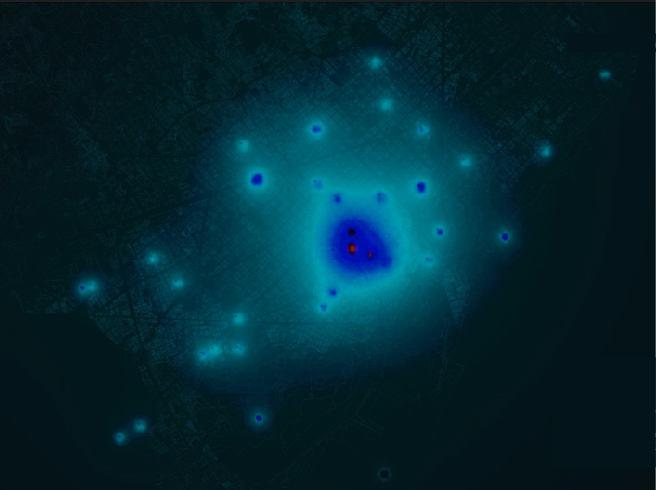

CLASSES


With the irruption of technology and mobile devices, cities are able to generate a large amounts of data on a daily basis, which gives us the opportunity to measure in real time the needs of people, their flows, concentrations...everything, to adapt to a much more changing and dynamic reality.
Nowadays our cities are hyperconnected, underscoring the emergence of a new elastic territoriality, a new informational order in which traditional infrastructure networks coexist and expand into immaterial connections. Those are difficult to perceive, but with the collected data we will be able to know and represent those changes.
We can read all the layers of our public space and the connections with its users. Layers that are there, but that we cannot always see. As architects, we study the data that affects our way of moving in the city, our way of living. Data that helps us to understand the present, to better shape the future of our cities.